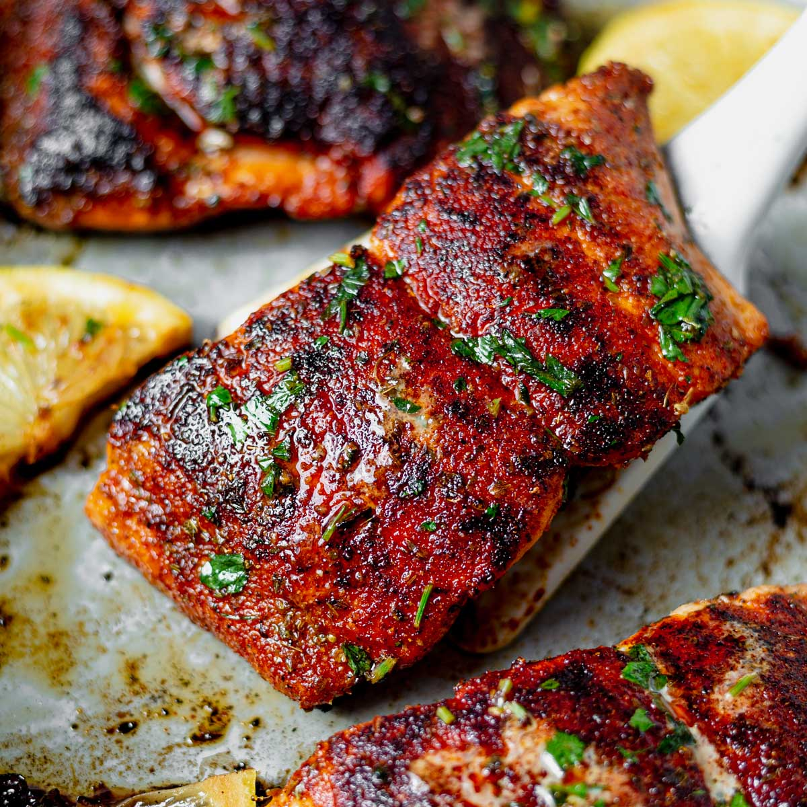

Blackened Salmon Filets

Description
Fire up succulent blackened salmon with an exciting blend of Cajun-style spices!
Ingredients
- Paprika
- Cayenne pepper
- Onion powder
- Salt
- White pepper
- Black pepper
- Dried thyme
- Dried basil
- Dried oregano
- Salmon filets
- Butter
Steps
- Mix paprika, cayenne pepper, onion powder, salt, white and black pepper, thyme, basil, and oregano together in a small bowl.
- Brush salmon fillets on both sides with 1/4 cup butter, and sprinkle evenly with the spice mixture.
- Heat 2 tablespoons melted butter in a large, heavy skillet over high heat. Add salmon and cook until blackened, 2 to 5 minutes. Lift fillets, add remaining melted butter to the skillet, and flip fillets into the butter. Cook until the other side is blackened and fish flakes easily with a fork, 3 to 5 minutes.
- Donezo
Return to Homepage